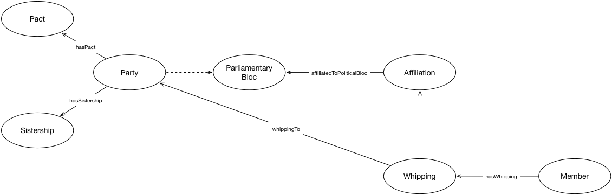

IRI: http://parliament.uk/ontologies/parliamentary-bloc/Affiliation
IRI: http://parliament.uk/ontologies/parliamentary-bloc/Member
IRI: http://parliament.uk/ontologies/parliamentary-bloc/MemberWhipping
IRI: http://parliament.uk/ontologies/parliamentary-bloc/Pact
IRI: http://parliament.uk/ontologies/parliamentary-bloc/ParliamentaryAgreement
IRI: http://parliament.uk/ontologies/parliamentary-bloc/ParliamentaryBloc
IRI: http://parliament.uk/ontologies/parliamentary-bloc/ParliamentaryParty
IRI: http://parliament.uk/ontologies/parliamentary-bloc/PoliticalParty
IRI: http://parliament.uk/ontologies/parliamentary-bloc/Sistership
IRI: http://parliament.uk/ontologies/parliamentary-bloc/accepts
IRI: http://parliament.uk/ontologies/parliamentary-bloc/hasAffiliation
IRI: http://parliament.uk/ontologies/parliamentary-bloc/hasAssociation
IRI: http://parliament.uk/ontologies/parliamentary-bloc/hasPact
IRI: http://parliament.uk/ontologies/parliamentary-bloc/hasParliamentaryAgreement
IRI: http://parliament.uk/ontologies/parliamentary-bloc/hasSistership
IRI: http://parliament.uk/ontologies/parliamentary-bloc/whippedTo
This HTML document was obtained by processing the OWL ontology source code through LODE, Live OWL Documentation Environment, developed by Silvio Peroni.